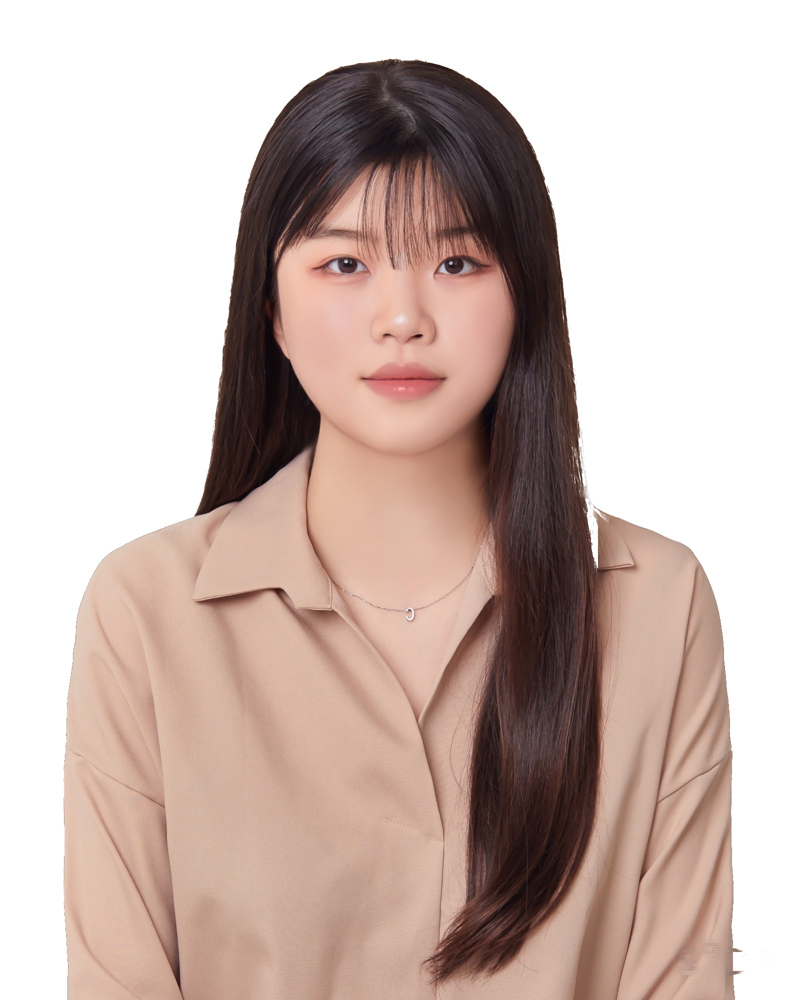

Content Planner & Visual Designer
PORTFOLIO
콘텐츠의 아이디어를 발견하고 내용을 구성하는 최서윤입니다. 기획부터 편집, 시각화까지 하나의 흐름으로 연결하며, 읽히는 구성과 내용에 맞는 모양을 고민합니다.
SCROLL DOWN
ABOUT
서일대학교 졸업 예정. 읽히는 구성을 먼저 고민하고, 내용에 맞는 모양을 찾는 편집·콘텐츠 디자이너입니다. 잡지와 리플렛, 브로슈어 같은 편집물부터 북커버, 웹페이지 기획까지 — 정보를 정리하고 위계를 세워, 보는 사람이 자연스럽게 따라 읽을 수 있는 흐름을 만듭니다.
디자인 툴
InDesignIllustratorPhotoshop
작업 분야
편집 디자인콘텐츠 기획콘텐츠 시각화
작업물
학력
서일대학교 · 2027.02 졸업 예정
상일여자고등학교 · 2023.02 졸업
자격
한국사능력검정 1급 · GTQ 1급
그림책창작전문지도사 2급
My Skills.
- EDITORIAL DESIGN
- InDesign으로 잡지·리플렛·브로슈어의 지면을 구성하고 정보의 위계를 정리합니다. 사진과 글이 함께 읽히도록 배치하고, 내용에 따라 지면 구성을 바꿉니다. 제목·소제목·본문의 크기를 구분해 필요한 정보를 쉽게 찾을 수 있게 만듭니다.
- CONTENT PLANNING
- 주제에 맞는 장소·작품·정보를 선정하고, 읽는 흐름에 맞게 순서를 구성합니다. 실제 사용 경험을 바탕으로 문제를 정리하고 화면과 기능을 기획합니다. Claude를 활용해 기획한 화면을 웹사이트로 구현하고 직접 사용하며 다듬습니다.
- GRAPHIC & VISUAL
- Illustrator로 표지와 그래픽 요소를 디자인하고, 복잡한 형태를 단순하게 재구성합니다. Photoshop으로 이미지를 보정·합성해 작품의 분위기를 지면에 담습니다.
- InDesign
- Illustrator
- Photoshop
- Claude